04 Ac Fundamentals
A.C. Fundamentals

Nature itself characteristically a sinusoidal.
It is easy to generate & easy to transmit.
Let, a sinusoidal voltage can be expressed as:
V = V m Sin (ωt)

Amplitude
The maximum positive or negative value of an alternating quantity.
𝐴= |𝑚𝑎𝑥𝑖𝑚𝑢𝑚|+|𝑚𝑖𝑛𝑖𝑚𝑢𝑚| 2
Time period
Time taken by an alternating quantity to complete one cycle.

ω 𝑜𝑟 𝑇= 1 𝑓
Frequency
Number of cycles per second. It is denoted by f (in Hz) or cycle per second (c/s)
Phase difference
Let, V 1 = V m sin (ωt)

Where, ɸ = Phase difference (+) sign for ‘lead’ (-) sign for ‘lag’
Average value
Average value can be expressed as:

𝐴𝑟𝑒𝑎 𝑇𝑖𝑚𝑒 𝑝𝑒𝑟𝑖𝑜𝑑 𝑜𝑟 1 𝑇0 Average value is based on the transfer of charges.
RMS value

1 𝑅𝑀𝑆 𝑣𝑎𝑙𝑢𝑒= 𝑇0 It is based on the Heating effect.
Points to remember:
The average value of sine or cosine function of any phase & frequency is
zero & its rms value is given as:
= 𝑀𝑎𝑥𝑖𝑚𝑢𝑚 𝑣𝑎𝑙𝑢𝑒 2

If any expression f (t) = a 0 + a 1 sin (ωt) + a 2 sin (2ωt) +.…..
Then rms value is given by:

𝑓𝑡 () 𝑟𝑚𝑠 = 𝑎 0
WAVEFORM
SHAPE
MAX.
AVERAGE
RMS
FORM
CREST
VALUE
VALUE
FACTOR
| SINUSOIDAL WAVE | F1 Gaurav Gupta 3.3.21 Pallavi D 1 _ _ _ _ | A m | 2𝐴 𝑚 π | 𝐴 𝑚 2 | 𝐴 𝑚 2 = 1. 11 2𝐴 𝑚 π | 𝐴 𝑚 = 2 𝐴 𝑚 2 |
|---|---|---|---|---|---|---|
| SQUARE WAVE | F1 Gaurav Gupta 3.3.21 Pallavi D 2 _ _ _ _ | A m | A m | A m | 𝐴 𝑚 = 1 𝐴 𝑚 | 𝐴 𝑚 = 1 𝐴 𝑚 |
| TRIANGULAR WAVE | F1 Gaurav Gupta 3.3.21 Pallavi D 3 _ _ _ _ | A m | 𝐴 𝑚 2 | 𝐴 𝑚 3 | 𝐴 𝑚 3 = 2 𝐴 𝑚 3 2 | 𝐴 𝑚 = 3 𝐴 𝑚 3 |
| HALF-WAVE RECTIFIED WAVE | F1 Gaurav Gupta 3.3.21 Pallavi D 4 _ _ _ _ | A m | 𝐴 𝑚 π | 𝐴 𝑚 2 | 𝐴 𝑚 2 = π 𝐴 2 𝑚 π | 2 |


Peak factor (or crest factor)
𝑃𝑒𝑎𝑘 𝑓𝑎𝑐𝑡𝑜𝑟= 𝑀𝑎𝑥𝑖𝑚𝑢𝑚 𝑣𝑎𝑙𝑢𝑒 𝑟𝑚𝑠 𝑣𝑎𝑙𝑢𝑒
Form factor
𝑅𝑀𝑆 𝑣𝑎𝑙𝑢𝑒 𝐹𝑜𝑟𝑚 𝑓𝑎𝑐𝑡𝑜𝑟= 𝐴𝑣𝑒𝑟𝑎𝑔𝑒 𝑣𝑎𝑙𝑢𝑒

A pictorial representation of all the phase voltage & their respective
currents in the network. It is a rotating vector which rotates in anti-clockwise direction with
angular frequency ‘ω’ in time domain. It may be expressed in exponential form, polar form or rectangular
form.
Let, V (t) = V m cos (ωt + ɸ) (a) V = V m e j ɸ → Exponential form of Phasor representation
(b) V = V m < ɸ → Polar form of Phasor representation
(c) V = V m (cos ɸ + j sin ɸ) → Rectangular form of Phasor representation
Note:
In polar form r < ɸ, here r is RMS value.
In steady state, analysis of A.C. is generally carried out in Phasor
domain.

R = Pure resistance element (Ω) L = Pure inductance element (H) C = Pure capacitance element (F or µF) Z = impedance (Ω) X L = inductive reactance (Ω) = ωL = 2 f L π 1 1 𝑋 𝐶 = 𝑐𝑎𝑝𝑎𝑐𝑖𝑡𝑖𝑣𝑒 𝑟𝑒𝑎𝑐𝑡𝑎𝑛𝑐𝑒= ω𝑐 = 2π𝑓𝑐

G_5-12-2020_Swati_D2

G_5-12-2020_Swati_D3 ∵ “I” lags “V” so, lagging Pf.
𝑉 𝑅

𝑉
() 𝑜𝑟 ɸ = 𝑉 𝐿 () = 𝐼𝑚𝑝𝑒𝑑𝑎𝑛𝑐𝑒 𝐴𝑛𝑔𝑙𝑒 ω𝐿

𝑉 𝑅 𝑅

G_5-12-2020_Swati_D4


∵ “I” leads “V”, so leading Pf.
𝑉 𝑅

𝑉
() = 𝐼𝑚𝑝𝑒𝑑𝑎𝑛𝑐𝑒 𝐴𝑛𝑔𝑙𝑒 𝑉 𝑐 () 𝑜𝑟 1 ɸ = ω𝑅𝑐 𝑉 𝑅

G_5-12-2020_Swati_D5
| V > V L C | V > V C L | V = V L C |
|---|---|---|
| F4 Gaurav _ G 5-12-2020 Swati D6 _ _ _ | F4 Gaurav _ G 5-12-2020 Swati D7 _ _ _ |


() () 𝑉 𝐿 −𝑉 𝐶 𝑉 𝐶 −𝑉 𝐿


_D8 𝑉 𝑅 𝑉 𝑅 or or

() () 𝑋 𝐿 −𝑋 𝐶 𝑋 𝐶 −𝑋 𝐿 i.e., unity power


𝑅 𝑅 factor 𝑉 𝑅 𝑉 𝑅


𝑉 𝑉

“I” lags “V” “I” lags “V” “I” is in phase with i.e., lagging pf i.e., lagging pf “V”


G_5-12-2020_Swati_D9

𝑉 𝑅, 𝐼 𝐿 = 𝑋 𝐿 𝑉 ⇒𝐼 𝐿 = 𝑋 𝐿 <−90° G_5-12-2020_Swati_D10

𝐼 𝑅 𝐿𝑒𝑎𝑑𝑖𝑛𝑔 𝑝𝑜𝑤𝑒𝑟 𝑓𝑎𝑐𝑡𝑜𝑟= cos 𝑐𝑜𝑠 ɸ = 𝐼 𝐼 𝑅 () = 𝐼𝑚𝑝𝑒𝑑𝑎𝑛𝑐𝑒 𝐴𝑛𝑔𝑙𝑒 𝐼 𝐿


G_5-12-2020_Swati_D11 𝑉 𝐼 𝐶 = 𝑋 𝐶 < 90°
G_5-12-2020_Swati_D12

𝐼 𝑅 𝑙𝑎𝑔𝑔𝑖𝑛𝑔 𝑝𝑜𝑤𝑒𝑟 𝑓𝑎𝑐𝑡𝑜𝑟= cos 𝑐𝑜𝑠 ɸ = 𝐼 𝐼 𝑅 () 𝐼 𝐶


The resonance is the condition at which the natural frequency of the system is
equal to the source frequency of the system. Resonance occurs in the electrical circuit because of L & C elements.
Voltage & current are in phase in a circuit.
●
| Series Resonance | Parallel Resonance |
|---|---|
| Consider series RLC circuit F4 Gaurav G 5-12-2020 Swati D13 _ _ _ _ At series resonance Img {z} = 0 I.e., X = X L C Resonance frequency (ω ) 0 1 ω = 𝑟𝑎𝑑/𝑠𝑒𝑐 0 𝐿𝐶 ● Impedance is minimum & current is maximum ● Unity power factor | Consider parallel RLC circuit F4 Gaurav G 5-12-2020 Swati D15 _ _ _ _ At parallel resonance Img {Y} = 0 I.e., B = B C L ● Resonance frequency (ω ) 0 1 ω = 𝑟𝑎𝑑/𝑠𝑒𝑐 0 𝐿𝐶 ● Impedance is maximum & current is minimum ● Unity power factor |


Series resonance circuit is also called Parallel resonance circuit is also “Acceptor Circuit”. called “Rejector Circuit”.
Variation of circuit parameters with frequency
Variation
of
circuit
parameters
with
frequency
G_5-12-2020_Swati_D14 G_5-12-2020_Swati_D16
Case I: Below resonant frequency {ω < ω 0 }
Case I: Below resonant frequency {ω <
X C > X L ω 0 } Leading pf B L > B c Capacitive circuit Lagging pf Inductive circuit
Case II: Above resonant frequency {ω > ω 0 }
X L > X C
Case II: Above resonant frequency {ω >
Lagging pf ω 0 } Inductive circuit B C > B L
Quality factor
Leading pf Quality factor/magnification factor or figure Capacitive circuit of merit:
Quality factor
𝑄= 2π× 𝑀𝑎𝑥. 𝐸𝑛𝑒𝑟𝑔𝑦 𝑠𝑡𝑜𝑟𝑒𝑑 𝐸𝑛𝑒𝑟𝑔𝑦 𝑑𝑖𝑠𝑠𝑖𝑝𝑎𝑡𝑒𝑑 𝑐𝑦𝑐𝑙𝑒 | | | | 𝑉 𝐿 𝑋 𝐿 𝐼 𝐿
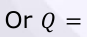
𝑅 | | 𝑎𝑡 𝑟𝑒𝑠𝑜𝑛𝑎𝑛𝑐𝑒 = 𝑄= 𝐼| | 𝑎𝑡 𝑟𝑒𝑠𝑜𝑛𝑎𝑛𝑐𝑒 = 𝑉 𝑅 𝑋 𝐿
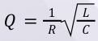
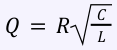
Series Resonance circuit is also called as Parallel Resonance circuit is also called voltage magnification circuit as current magnification circuit In series Resonance circuit, L & C In parallel Resonance circuit, L & C combination act as short circuit combination act as open circuit
Bandwidth
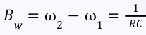
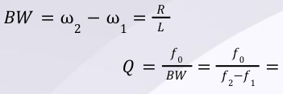
𝑓 0 𝑄= ω 0 𝐵𝑊 ω 2 −ω 1
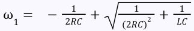
ω 1 = lower Half power frequency
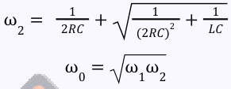
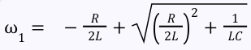
ω 2 = upper Half power frequency
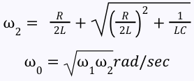
ω 1 ≈ω 0 − 𝐵𝑊 2
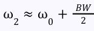
ω 1 ≈ω 0 − 𝐵𝑊 2 Valid Only when Q ≥10
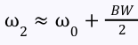
Q ∝ selectivity Valid Only when Q ≥10 Or B W ∝ 1/selectivity 𝑓 0 𝑆𝑒𝑙𝑒𝑐𝑡𝑖𝑣𝑖𝑡𝑦= 𝑓 2 −𝑓 1 𝑓 0 𝑆𝑒𝑙𝑒𝑐𝑡𝑖𝑣𝑖𝑡𝑦= 𝑓 2 −𝑓 1
For series RLC
{ } 𝐼 𝑚𝑎𝑥 𝐼= 2
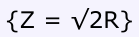
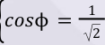
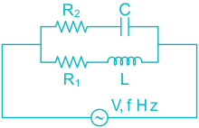
G_5-12-2020_Swati_D17
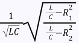
1 Resonance frequency ω 0 = Circuit will be at resonance for any frequency at
●
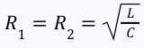
G_5-12-2020_Swati_D18 1
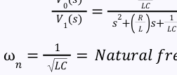
𝐿𝐶
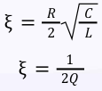
Critically Damped :
●
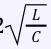
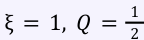
𝐿 2, 𝑅= 2 𝐶
Over -damped:
●
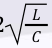
ξ > 1, 𝑄 < 1 𝐿 2, 𝑅> 2 𝐶
Under -damped:
●
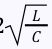
ξ < 1, 𝑄 > 1 𝐿 2, 𝑅< 2 𝐶
Undamped :
Q → ∞, ξ = 0, R = 0 (Practically impossible)
G_5-12-2020_Swati_D19
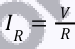
𝑉 𝐼 𝐿 = 𝑋 𝐿 ∠−90° 𝑉 𝐼 𝐶 = 𝑋 𝑐 ∠90°
| I > I c L | I < I c L | I = I L c |
|---|---|---|
| F4 Gaurav _ G 5-12-2020 Swati D2 _ _ _ 0 2 2 𝐼 = 𝐼 + (𝐼 − 𝐼 ) 𝑅 𝑐 𝐿 | F4 Gaurav _ G 5-12-2020 Swati D2 _ _ _ 1 2 2 𝐼 = 𝐼 + (𝐼 − 𝐼 ) 𝑅 𝐿 𝐶 | F4 Gaurav _ G 5-12-2020 Swati _ _ _ D22 ϕ = 0° ⇒ unity power factor |
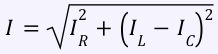
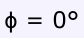
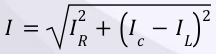
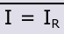
() () 𝐼 𝑐 −𝐼 𝐿 𝐼 𝐿 −𝐼 𝑐
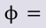
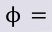
𝐼 𝑅 𝐼 𝑅 𝐼 𝑅 𝐼 𝑅
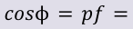
𝐿𝑎𝑔𝑔𝑖𝑛𝑔 𝑝𝑓= 𝐼 𝐼 Leading power factor
Transient in the system is occur only because of presence of inductor &
the capacitor elements (i.e., energy storing elements) There are no transients occurs in the system when only resistance is
present. The transients effects are more severe for D.C. as compared to A.C.
Inductor does not allow sudden change of current while capacitor does
not allow sudden change of voltage.

G_5-12-2020_Swati_D1
At t = 0 + instants:
L → O.C.
C → S.C.
At t → ∞instants:
L → S.C.
C → O.C. i.e., the L & C elements will die for D.C. excitations/sources in steady state.
Source free RL circuit
G_5-12-2020_Swati_D2
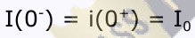
− 𝑅 𝐿 𝑡 𝑖𝑡 () = 𝐼 0 𝑒
Source free RC circuit
G_5-12-2020_Swati_D3
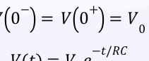
𝑉𝑡 () = 𝑉 0 𝑒
RL circuit with source
G_5-12-2020_Swati_D4 G_5-12-2020_Swati_D5
() − 𝑅𝑡
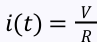
𝐿
− 𝑅𝑡
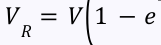
− 𝑅𝑡
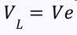
𝐿
RC circuit with source
G_5-12-2020_Swati_D6 G_5-12-2020_Swati_D7 () − 𝑡 𝑅𝐶 𝑉 𝑐 𝑡 () = 𝑉1 −𝑒 − 𝑡
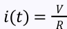
𝑅𝐶
− 𝑡 𝑅𝐶 𝑉 𝑅 𝑡 () = 𝑉𝑒
[R]
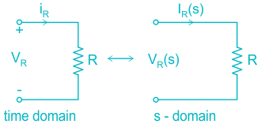
G_5-12-2020_Swati_D8 [L]
G_5-12-2020_Swati_D9 Converting into S-domain:
G_5-12-2020_Swati_D10
𝐿 𝑒𝑞
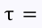
𝑅 𝑒𝑞 𝑠𝑒𝑐; 𝑓𝑜𝑟 𝑅𝐿 𝐶𝑖𝑟𝑐𝑢𝑖𝑡 = sec; for RC Circuit τ 𝑅 𝑒𝑞 𝐶 𝑒𝑞
For series RL circuit
G_5-12-2020_Swati_D11 V (t) = V m sin (ωt + ɸ)
If the switch is closed at t = t 0, then the condition for the transient free response at t = t 0 is given as:
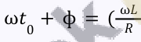
CASE II : For cosine excitation: cos (ωt + ɸ )
Condition for the transient free response at t = t 0 is:
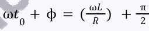
For series RC circuit
CASE I: For sine excitation:
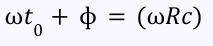
CASE II: For cosine excitation:
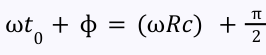
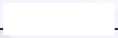
Above all formula (transient free condition) are also valid for parallel
combination of RL & RC. Transient free condition in not possible for network with both the energy
storing elements i.e., for series RLC network. Inductor allows instantaneous changes for voltage impulse function.
Capacitor allows instantaneous changes for current impulse function.
●
Points to Remember:
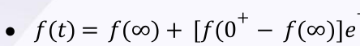
τ
This above expression is Only valid for RL, RC circuit.
Time constant only defined for or causal system.
𝑡≥0 Inductor & Capacitor never dissipates power.
Reading of voltmeter represents RMS value. Hence, we assume all
currents & voltage values as RMS value. If there is no information of A.C. sources in the form of phasor
representation or sinusoidal source, then by default we assume RMS voltage & current in the network.
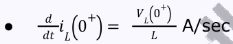
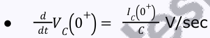
If ideal voltage source is directly connected across ideal capacitor, then
●
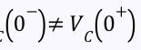
capacitor does not follow its own property. i.e., 𝑉 𝐶 0
If ideal current source is directly connected across ideal inductor, then
●
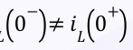
inductor does not follow its own property. i.e., 𝑖 𝐿 0
Electric Filter is used to select certain bands of frequencies to pass along
or accept & another band to stops or reject. The frequency at which the transition between passing & rejecting input
signal occurs is called cut-off frequency (f c or
). ω 𝑐
It allows only low-frequency components (below cut-off frequency).
●
First order

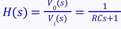

Second order
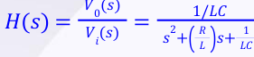
It allows only high – frequency components (above Cut-off frequency).
It allows only a certain band of frequency.
𝐿 () 𝑠 𝑅
It attenuates signals with frequencies below & above .
ω 𝑐 1 ω 𝑐 2
It blocks a certain band of frequency & passes low & high frequencies.
It attenuates signals that fall in between these two corner frequencies.
●
It passes all frequencies without attenuation but provides a predictable
phase shift. In all pass filter, poles & zeroes are mirror image of each other.
|H (jω)| is independent of frequency but phase may vary.
Points to Remember:
When low pass filter & High pass filter are connected in cascade, if low
pass cutoff frequency is greater than High pass Cutoff frequency then it acts as a Band pass filter. Series & parallel resonance circuit are Band pass filter.
A Notch filter is also known as Band stop filter or Band Reject Filter
which attenuates the particular band of frequencies. When low pass filter & High pass filter are connected in parallel, if High
pass Cut off frequency is greater than low pass cut off frequency then it acts as a Band Rejection filter.
𝑁 1 ϕ 1 𝑁 2 ϕ 2
𝐼 1 𝐼 2 𝑁 1 ϕ 21
𝑀= 𝐼 2
ϕ 21 ϕ 2 = 𝑢𝑠𝑒𝑓𝑢𝑙 𝑓𝑙𝑢𝑥
𝐾= 𝑇𝑜𝑡𝑎𝑙 𝑓𝑙𝑢𝑥 from (1) M 2 = KL 1 L 2
K = 0 represents Loose Bound K = 1 represents Tight Bound.


2

2

2 𝐿 1 𝐿 2 −𝑀 Irrespective of dots 𝐿 𝑒𝑞 = 𝐿 2


𝑑𝐼 1
𝑉 1 −𝐿 1 𝑑𝑡 −𝑀 𝑑𝐼 2
𝑉 2 −𝐿 2 𝑑𝑡 −𝑀
Z parameter

[] 𝑍= 𝐽ω𝐿 1 𝐽ω𝑀 𝐽ω𝑀 𝐽ω𝐿 2
Points to remember
1 Energy stored in combination of inductors is 2 𝐿 1 𝐼 1 2 𝐿 2 𝐼 2
For ideal transformer: the transmission matrix is given by
𝑁 1 𝑁 2 ⎡⎢⎣ ⎤⎥⎦ where N 1 and N 2 are the number of turns on primary and
𝐴 𝐵 𝐶 𝐷 [] = 𝑁 2 0 0 𝑁 1 secondary side respectively.
It is the representation of the circuit in which current source is made open circuited and voltage source is made short circuited. Other circuit elements are also replaced by just a line eg. Represent the graph of circuit – shown above.
No of Branches of network ≥Graph
Steps to find incidence matrix
(1) Assign a number to the Branches. (2) If current is incident on the node, take it 1 or 1, if current is leaving the node, then take it 1 or 1, if node is not connected to branch then put it zero.
Sign of entering and leaving should be different.
●
E.g:
The incidence matrix for the graph is let us Assume
Branch
| Node | 1 | 2 | 3 | 4 | 5 | 6 | 7 |
|---|---|---|---|---|---|---|---|
| A | -1 | -1 | 0 | 0 | 0 | 0 | 0 |
| B | 0 | 1 | -1 | -1 | 0 | 0 | 0 |
| C | 0 | 0 | 0 | 1 | -1 | 0 | -1 |
| D | 0 | 0 | 0 | 0 | 0 | 1 | 1 |
| F | 1 | 0 | 1 | 0 | 1 | -1 | 0 |
Properties of incidence matrix:
(1) Sum of each column must be zero (2) It is not unique. (3) Each column contain one +1 and one 1. (4) order of matrix is (node X Brances) (5) Two graph having same incidence matrix are called Isomorphic graph. (6) If we remove any of the row of incidence matrix, then it become row reduced incident matrix.
It is the unconnected graph which contains all the nodes and there should not be any closed path. The Branches of Tree are called Twigs and other removed branches are called links or Chords
Eg

For a particular graph, there are number of trees possible. Total number of possible tree = N N – 2 Where N is number of nodes. This formula is valid if (1) Each node in the graph have at least one branch (2) All nodes are full of connection. (3) No repeated branch between nodes.
𝑇 [] Total number of possible tree = det 𝑑𝑒𝑡 𝐴 [] 𝐴 [] where A is row reduced incidence matrix. This formula is applicable for all graphs.
Total number of node pair voltages = 𝑛𝑛−1 () 2
(1) Total number of possible tie set = cut set = N N 2 (2) Rank of cut set matrix = Tree Branches = N – 1
- 1. Rank of Graph = N 1
- 2. Total Tree Branches = N 1
- 3. Total link (chords) = b – (N – 1)
- 4. A graph is said to be complete graph, if there is only one-line segment between all the nodes pairs.
- 5. Degree of a node is equal to number of incoming branches.